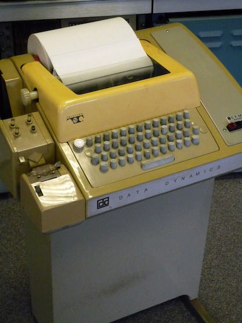
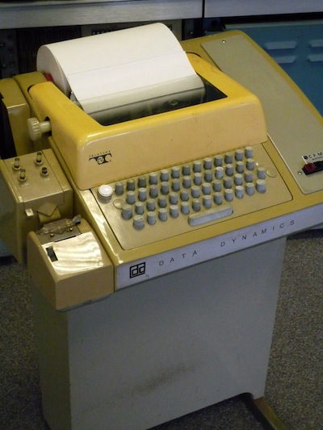

Hardware
- CPU with 4K of Memory (4,096 twelve-bit words)
- Teletype interface: ASR-33 Teletype
- Programmed I/O Bus (Negibus) - Printers / Teletypes
- DMA Bus - ADs, DAs, Tape, Disk Drives
 
Jeremy Chalmer
2011-12-14
DEC PDP-8

*10 / Set current assembly origin to address 10,
STPTR, STRNG-1 / An auto-increment register (one of eight at 10-17)
*200 / Set current assembly origin to program text area
HELLO, CLA CLL / Clear AC and Link again (needed when we loop back from tls)
TAD I Z STPTR / Get next character, indirect via PRE-auto-increment address from the zero page
SNA / Skip if non-zero (not end of string)
HLT / Else halt on zero (end of string)
TLS / Output the character in the AC to the teleprinter
TSF / Skip if teleprinter ready for character
JMP .-1 / Else jump back and try again
JMP HELLO / Jump back for the next character
STRNG, 310 / H
345 / e
354 / l
354 / l
357 / o
254 /,
240 / (space)
367 / w
357 / o
362 / r
354 / l
344 / d
241 / !
0 / End of string
$HELLO /DEFAULT TERMINATOR